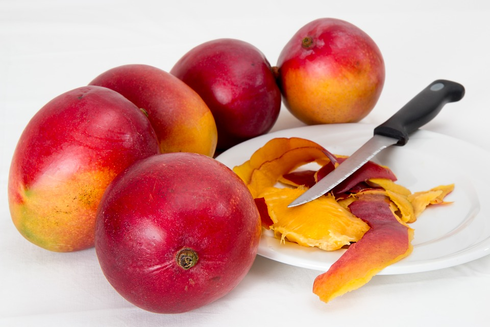
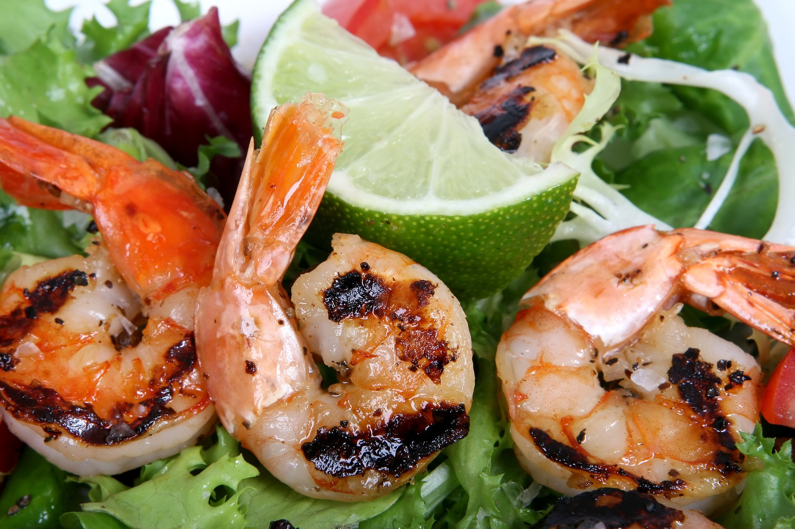
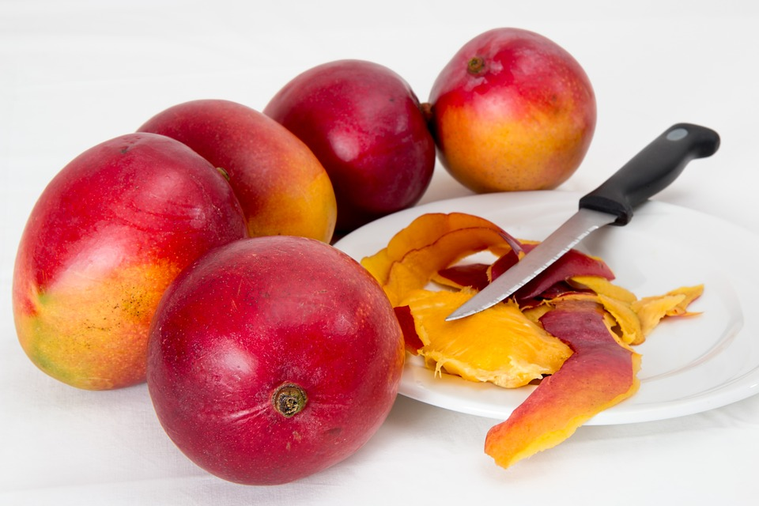
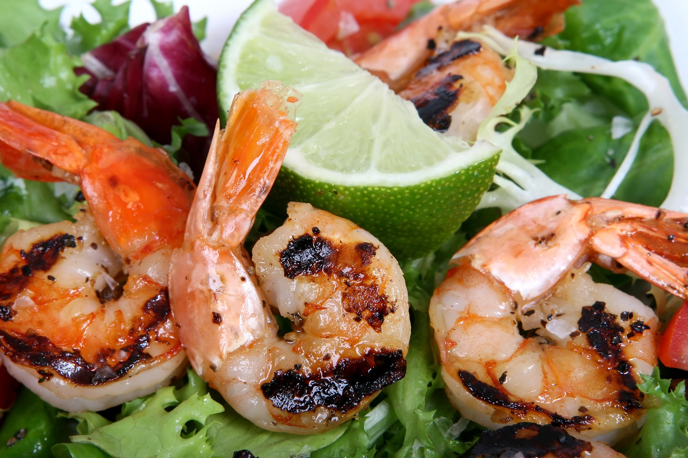

Hello, world! Welcome to my Favourite Things Page!
My Favourite things themes!
- My Family: I am a daughter, a wife and a blessed mother
- My Work :I enjoy solving problems through Innovation! An Entrepreneur and entrepreneur! Ask me anything to do with cultivating an Innovation culture, defining winning strategies, building sustainable products and purpose driven culture
- My Activities:I am Rotarian who enjoys community service, Nurturing and mentorship of youth, Service in church through the women ministry.
My Favourite Quotes
- “What God intended for you goes far beyond anything you can Imagine” Oprah Winfrey
- “The greatest glory in living lies not in never failing, but in rising every time we fall “Nelson Mandela
- “In the end, its not the years in your life that count. Its the life in your years.” Abraham Lincoln
- “Love the life you live. Live the life you love”Bob Marley
My Favourite Music
- Huniachi by Reuben Kigame and Gloria Muliro
- Ti tuhu by Njeru Nthiga
Pictures of my other Favourite things

 


